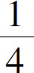
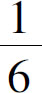
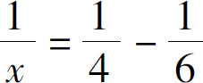
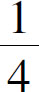
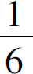
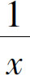
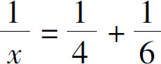

有一些应用题从表面上看起来题目中缺少数字或者缺少什么条件．接下来，我们就看一下常见的鸡兔同笼问题：
鸡和兔子装在一个笼子里，这个笼子里一共有头20个，腿60条，问鸡和兔子分别有几只？
这个题目里，只有20和60两个数字，这两个数字相互之间也没有计算关系，一个表示的是头的总数，一个是腿的总数，它们之间，根本就不能相互加减乘除，那怎么办呢？不要忘了，一只鸡有两条腿，一只兔子有四条腿，这是人所共知的常识，我们得把这两个条件用上！如果我们假设鸡有x 只，兔子有y 只，那么根据题意：鸡和兔子一共有20个头，那就是x＋y ＝20，这是个二元方程，我们还得列一个等式，还有腿呢？x 只鸡就会有2x 条腿，y 只兔子呢，就会有4y 条腿，根据题意，腿一共有60条，所以就是2x ＋4y ＝60．两个方程式都得到了，求解就不难了．
让我们再重新回顾一下这个题目，其中隐含了鸡有两条腿、兔子有四条腿这两个数字，所以看起来就有了一点难度．要解决这类问题，就必须结合生活常识，从常识里把题目中丢掉的数字给找回来．接下来，我们再做一个类似的题目：
现在是三点整，我要问你，这钟表的分针再用多长时间能把时针给追上呢？
这也是一个需要结合常识来求解的问题．首先要知道，这是一个追及问题，也就是让我们求跑得快的物体多长时间能追上那个跑得慢的．根据常识可以知道，在追及的过程中，无论是跑得快的还是跑得慢的，从开始追到追上以后，这段时间是固定的，也就是说，它们两个用的时间是相同的，而跑的距离呢？跑得快的会比跑得慢的多一些，多多少呢？多的就正好是一开始落下的那段距离．也就是说，开始的距离差加上跑得慢的距离等于跑得快的距离，距离又等于各自的速度乘以时间．那么，这分针和时针的距离差是多少，速度又是多少呢？这就需要我们结合常识来判断了．我们都知道，分针一个小时走一圈，这一圈是60个小格子，而时针呢？一个小时会走过钟表上的两个数字间的距离，其中有5个小格子．一开始分针和时针的距离差是多少呢？我们再想想三点整的时候，时针分针分别在哪儿啊？时针指着3，分针指着12，他们之间的差距是3个数字，也就是15个小格子．条件都凑齐了，那我们就列方程吧：
假设过x 个小时后分钟追上时针，因为分针的速度是每小时60个格子，所以这段时间内分针走的距离就是60x 个格子，那么时针走的速度是每小时5个格子，所以时针走的距离就是5x 个格子，两个距离的差是15个小格子，也就是说60x －5x ＝15，我们的方程就列出来了．
像这类题目都是要根据常识补全数字的应用题．在这类问题中，我们更常见的是类似这样的问题：
一个水池，如果只开进水管，4个小时就能灌满；如果只开排水管，6个小时就能排空了，如果同时开进水管和排水管，那么这个水池什么时候能够灌满？
我们在解决这类问题的时候，同样会感觉缺少什么条件，因为题目并没告诉我们水池里能够装多少水，只告诉我们几个小时装满有什么用呢？别急，这属于标准的分式问题，在这类问题中，我们根据常识，也得不到什么现成的数字，因为世界上的水池大小不同，我们总不能根据自己家里的水池来计算．那怎么办呢？我们可以假设水池里装的水是1．这样就可以得到进水和排水的速度了．如果我们假设两个水管全部打开以后，x 个小时可以灌满，那么根据题意，只开进水管需要4个小时可以灌满水，说明进水管每个小时可以灌水

；而只开排水管6个小时可以把水放完，就说明排水管每个小时可以放水
，那么两个水管全开以后呢？每个小时存下的水的量就是进水量减去排水的量．也就是说
．这样，我们就得到了方程式．与此类似的问题还有下面的工作进度问题：
小明4个小时可以把活干完，小红6个小时可以把活干完，两个人一起干，多长时间可以干完呢？
同样的道理，我们也假设总工作量是1，这时候小明一个小时可以干

，小红一个小时可以干
，假设他们x 小时可以干完，那么他俩一起干，一个小时可以做
，也就是
．这个方程式跟水池问题唯一的区别就是，水池问题是减法，工作问题是加法，其余的分析都是一样的，也就是说，当我们在没有现成的数字可以引用的时候，我们还可以借用数字1来表示总的数量．最后，我们要总结一下这类应用题了：当我们发现应用题中给的条件不足的时候，就应该尽量从生活的常识里面去引用一些数字；如果常识也不能带给我们更多信息，那么，我们就可以尝试引入数字1来表示总量．对于这类题目而言，只要找到了隐含的数字，解题就不再困难了．